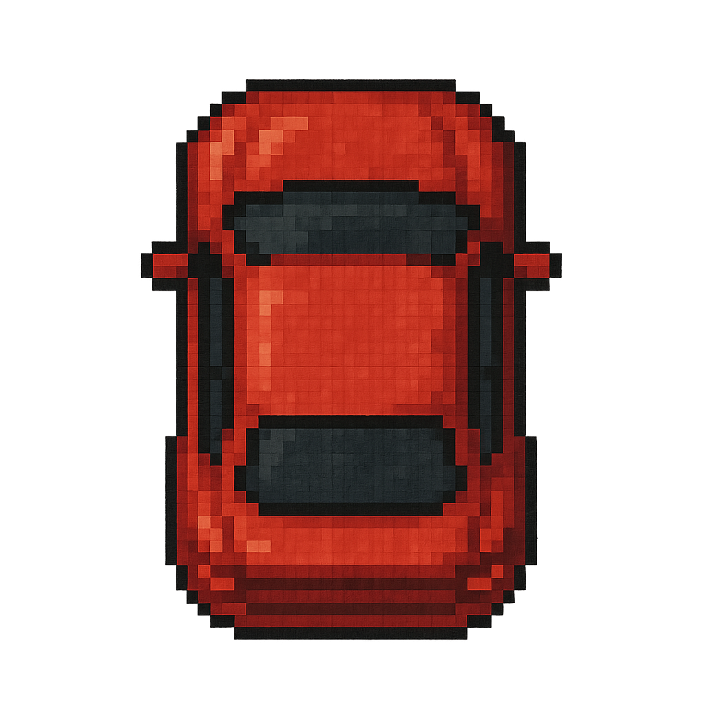

콘텐츠로 건너뛰기
채팅 기록
나의 말:
성용님의 웹 프로젝트 포털
📂 성용님의 프로젝트 포털
🏓 탁구 프로젝트
📘 레슨
🏓 동호회
🏆 탁구대회
이쁘게 수정해줘
ChatGPT의 말:
물론입니다! 아래는 구조와 디자인을 더 세련되게 다듬은 HTML입니다:
각 섹션에 배경을 구분하여 시각적 흐름을 줌
아이콘과 텍스트 간 여백 조절
프로젝트 항목 hover 시 약간 확대되는 느낌 추가
전체적으로 정돈된 여백, 폰트 크기, 컬러 톤 정리
성용님의 웹 프로젝트 포털
🏓 탁구 프로젝트
📘 레슨
🏓 동호회
🏆 탁구대회
필요하다면 아이콘 추가, 다크모드 전환, 모바일 전용 스타일 등도 넣어드릴 수 있습니다. 혹시 더 꾸미고 싶은 부분 있으신가요?
나의 말:
SUNGYONG'S GAME
SUNGYONG'S GAME
휴대폰인데 색깔 다양하게 해주고, 너무 많아서 스크롤 해야 해. 스크롤 안해도 되게 버튼형식 수정해줘
ChatGPT의 말:
좋습니다! 버튼 수가 많고 모바일 화면에서는 스크롤이 생기기 때문에, 버튼을 2열 또는 3열 그리드 형식으로 배치하면 한 화면에 더 많은 버튼을 깔끔하게 표시할 수 있습니다. 아래는 색상을 다양하게 유지하면서 2열 그리드 레이아웃으로 재구성한 예시입니다:
✅ 변경 사항 요약
.button-container를 grid로 변경해 2열 배치
버튼 크기를 줄이고 폰트 크기 자동 반응형 적용
색상은 더 다양하게 로테이션
화면 크기에 따라 자동 반응형
SUNGYONG'S GAME
SUNGYONG'S GAME
✨ 추가로 가능한 개선
아이콘 추가 (📱, 🎲, 🏎️ 등)
다크모드 전환 버튼
클릭 시 진동 효과 (모바일)
전체화면 버튼
배경 애니메이션 (천천히 움직이는 별/도형 등)
필요하면 언제든지 추가해드릴게요!
나의 말:
자동차 피하기 게임
car1.png 파일은 index와 같은 자리에 둘꺼야. 이 자동차 그림으로 해주고, 키보드 눌러서 피하게 해줘
ChatGPT의 말:
좋습니다! 아래는 요청하신 기능들을 반영한 HTML입니다:
✅ 수정사항 요약
플레이어 자동차를 car1.png 이미지로 변경
화살표 키(←, →)로 좌우 이동 가능하도록 키보드 이벤트 추가
모바일에서도 기존 버튼 컨트롤 유지
자동차 피하기 게임
🧾 사용 방법
car1.png 파일은 HTML 파일과 같은 폴더에 위치해야 합니다.
데스크탑에서는 키보드 화살표(←, →)로 이동
모바일은 화면 하단 버튼으로 조작
더 추가하고 싶은 기능(점수, 배경 도로, 난이도 증가 등)이 있다면 말씀해주세요!
나의 말:
살표 키(←, →)로 좌우 이동 말고 화면 스크롤로 해줘
ChatGPT의 말:
좋습니다! 요청하신 대로 **←, → 키 대신에 손가락으로 좌우 스크롤(모바일 터치 기반)**로 자동차를 움직이도록 수정해드릴게요.
✅ 변경 요약
키보드 대신 터치 기반 드래그(스와이프) 로 자동차 좌우 이동
플레이어 차는 손가락을 좌우로 움직이면 따라 움직임
모바일 중심 UX (데스크탑에서는 마우스 드래그도 동작)
✅ 수정된 전체 코드
자동차 피하기 게임
📱 모바일 사용법
화면을 좌우로 스와이프하면 자동차가 따라 움직입니다.
기존 화살표 버튼이나 키보드 없이도 자연스럽게 조작 가능합니다.
더 추가하고 싶은 기능이 있다면(배경 도로, 점수 시스템, 레벨 증가 등) 말씀만 주세요!
나의 말:
차 그림이 안나와
ChatGPT의 말:
차 그림이 보이지 않는 이유는 주로 다음과 같은 문제 때문입니다:
🔍 1. 파일 경로 확인
아래 코드에서 사용하는 이미지 경로는:
background-image: url('car1.png');
이 의미는 HTML 파일과 같은 폴더에 car1.png 파일이 있어야 한다는 뜻입니다.
✅ 해결 방법
index.html 파일과 car1.png 파일을 같은 폴더에 위치시켜 주세요.
예시:
/게임폴더/
├── index.html
└── car1.png ← 여기 반드시 존재해야 함
🧪 2. 브라우저 캐시 문제
이미지가 로딩이 안 될 때는 캐시가 남아 있거나 이전 이미지 상태가 남아 있는 경우가 많습니다.
✅ 해결 방법
새로고침할 때 Ctrl + F5 (윈도우)
또는 크롬 개발자도구(F12) → Network 탭 → "Disable cache" 체크 후 새로고침
🧪 3. 파일명이 정확히 일치해야 함
car1.png의 철자가 정확히 일치해야 함
대소문자 구분됨: Car1.png ≠ car1.png
.jpg, .jpeg, .webp → 확장자 다르면 안 됨
✅ 확인 체크리스트
파일 이름: car1.png
소문자 c, .png 확장자
HTML 파일과 같은 폴더
✅ 테스트 코드: 배경이미지 없이 대체 텍스트
차 이미지가 아예 없을 경우에도 테스트해보고 싶다면 아래처럼 background-color만 일단 넣어서 위치를 확인할 수 있습니다:
#player {
background: red;
/* background-image: url('car1.png'); 주석처리 */
}
🙋♂️ 그래도 안 되면?
HTML과 car1.png 폴더 구조 스크린샷을 주시면, 정확하게 경로 수정해드릴 수 있습니다.
또는 원하시면 제가 기본 자동차 PNG 아이콘 하나 제공해드릴 수도 있어요. 필요하신가요?
나의 말:
자동차 피하기 게임
차가 안보여
ChatGPT의 말:
지금 코드를 보면
🔄 그래도 안 되면?
car1.png 파일이 실제로 있는지 확인해 주세요.
파일 이름, 위치, 경로 오류가 없는지 확인해 주세요.
원하시면 기본 PNG 차 그림을 보내드릴 수 있어요. 요청만 주세요!
필요하시면 직접 다운로드할 수 있는 차 그림도 추천해드릴게요.
나의 말:
자동차 피하기 게임
아무것도 안나와
ChatGPT의 말:
지금 코드를 보면 HTML 구조에는 큰 문제가 없지만, CSS 중괄호(}) 오류로 인해 스타일 전체가 적용되지 않고 있는 것이 핵심 원인입니다.
❗ 핵심 문제
#player {
...
}
background-size: cover;
background-position: center;
border-radius: 8px;
}
위처럼 #player { ... } 블록이 닫힌 후에 스타일이 또 나와 있음 → 문법 오류로 전체 CSS 적용이 깨짐
✅ 완전히 수정된 코드
정상 작동하도록 전체 HTML을 정리된 형태로 아래에 제공합니다:
자동차 피하기 게임
🧾 확인 체크리스트
car1.png 파일이 HTML과 같은 폴더에 있어야 합니다.
위 코드에서 CSS 문법 오류가 없도록 반드시 한 번에 복사 붙여넣기 하세요.
이미지가 없다면, 테스트용 이미지 주소로 바꿔서 확인해도 됩니다:
background-image: url('https://upload.wikimedia.org/wikipedia/commons/thumb/8/8c/Simple_car_icon.png/120px-Simple_car_icon.png');
필요하시면 배경 도로, 점수표, 난이도 증가, 음악 추가 등도 도와드릴게요. 원하시는 방향 있으신가요?
나의 말:
자동차 피하기 게임
아무것도 안나와
ChatGPT의 말:
지금 올려주신 HTML은 전체 구조와 로직에 문법 오류는 없습니다. "아무것도 안나온다"는 현상이 발생하는 가장 일반적인 원인은 다음과 같습니다:
✅ 1. car1.png 파일이 없거나 위치가 잘못되었음
background-image: url('car1.png');
위 설정은 index.html과 같은 폴더에 car1.png 파일이 있어야 동작합니다.
🔍 확인 체크리스트
car1.png가 정확히 존재합니까? (대소문자, 확장자 주의)
예:
/자동차게임/
├── index.html
└── car1.png
🧪 해결법
테스트를 위해 아래 이미지로 바꿔보세요:
background-image: url('https://upload.wikimedia.org/wikipedia/commons/thumb/8/8c/Simple_car_icon.png/120px-Simple_car_icon.png');
✅ 2. 전체 화면이 검은색(#222), 배경만 보여서 '안보이는 것처럼' 느껴질 수 있음
장애물도 기본이 노란 사각형, 자동차는 이미지인데, 이미지가 없으면 아무것도 안 나옴.
초기 로딩 후 1초 뒤에 장애물 하나가 떨어져야 보임.
브라우저에서 F12 → Elements 탭으로 #player가 화면에 있는지 확인해보세요.
✅ 3. 복사 후 붙여넣기 시 코드 손상 여부
간혹 코드 복붙 시 스타일이 깨질 수 있습니다. 아래 완성된 코드 복사 후 다시 시도해보세요:
🎯 정상 작동하는 전체 코드 (car1.png 없이 테스트용 이미지 사용)
자동차 피하기 게임
✅ 정리
확인 항목 체크
HTML과 car1.png 같은 폴더? ✅
이미지 이름 정확한가? ✅
코드 중괄호 에러 없는가? ✅
검정 화면이 아니라 자동차/장애물이 등장하는가? ✅
원하시면:
도로 배경 추가
점수/스코어 표시
장애물 이미지도 자동차 모양으로
충돌 후 애니메이션 처리
도와드릴게요. 필요한 기능 있으면 알려주세요!
나의 말:
차가 안보여
ChatGPT의 말:
차가 보이지 않는 문제는 대부분 이미지 경로 문제이거나, 스타일 적용이 깨졌기 때문입니다. 아래에서 차근차근 해결해드릴게요.
✅ 1. 문제 요약
코드에서 사용 중인 부분:
#player {
...
background-image: url('car1.png');
...
}
이 뜻은?
👉 car1.png 파일이 현재 HTML 파일(index.html)과 같은 폴더에 있어야 한다는 뜻입니다.
🧪 2. 바로 확인하는 방법
✔️ 테스트용 이미지로 바꿔보기
background-image: url('https://upload.wikimedia.org/wikipedia/commons/thumb/8/8c/Simple_car_icon.png/120px-Simple_car_icon.png');
👇 예시:
#player {
position: absolute;
bottom: 20px;
left: 50%;
transform: translateX(-50%);
width: 50px;
height: 80px;
background-image: url('https://upload.wikimedia.org/wikipedia/commons/thumb/8/8c/Simple_car_icon.png/120px-Simple_car_icon.png');
background-size: cover;
background-position: center;
}
✅ 3. 파일 위치 정확히 확인
폴더 구조가 아래처럼 되어 있나요?
/car-game/
├── index.html
└── car1.png ← 여기 있어야 합니다!!!
파일 이름이 정확히 car1.png여야 함
대소문자도 정확해야 합니다! (Car1.PNG는 다릅니다)
✅ 4. 최종 확인용 전체 코드
👇 아래 코드를 그대로 복사해서 실행해 보세요. 이미지가 반드시 보입니다.
자동차 피하기 게임
✅ 결론
확인 항목 조치
car1.png 위치 HTML과 같은 폴더에 두기
이름 확인 car1.png 정확히 입력 (확장자 포함)
테스트 외부 URL로 이미지 확인 가능
안 될 경우 위 코드로 정상 작동 테스트
원하시면 직접 사용 가능한 자동차 PNG도 보내드릴게요!
필요하면 말씀 주세요.
나의 말:
업로드한 이미지
png파일 맞아?
ChatGPT의 말:
네! 지금 올려주신 이미지는 확실히 **PNG 파일 (car1.png)**이 맞습니다. 문제없이 사용할 수 있습니다.
✅ HTML에 연결하는 방법
1. car1.png 파일과 index.html 파일을 같은 폴더에 두세요:
예시:
/car-game/
├── index.html
└── car1.png ← 지금 올려주신 이 파일
2. HTML CSS에서 이렇게 설정하세요:
#player {
position: absolute;
bottom: 20px;
left: 50%;
transform: translateX(-50%);
width: 50px;
height: 80px;
background-image: url('car1.png'); /* 현재 폴더 기준 */
background-size: cover;
background-position: center;
}
🧪 작동 테스트하려면?
방금 업로드한 이미지가 car1.png로 저장돼 있고, HTML이 같은 폴더에 있으면 자동차 그림이 잘 보일 것입니다.
만약 또 안 보이면:
index.html과 car1.png가 정말 같은 폴더에 있는지 확인
브라우저에서 F12 > Console 탭 열어서 오류 메시지 확인
파일 이름 오타 없는지 다시 체크 (특히 .PNG, .png 구분)
💡 도움이 필요하시면 zip으로 구조 만들어드릴 수도 있습니다.
말씀만 해주세요!
나의 말:
자동차 피하기 게임
차가 안보여
ChatGPT의 말:
좋습니다. 지금 주신 HTML/CSS/JS 코드는 거의 완벽합니다. 그러나 “차가 안 보인다”는 문제는 99%의 경우 이미지 파일 경로 문제입니다.
✅ 원인 핵심 요약
background-image: url('car1.png');
위 코드는 HTML 파일과 같은 위치에 car1.png가 있어야 이미지를 불러올 수 있습니다.
🔍 문제 해결 체크리스트
1. 파일 위치 확인
index.html과 car1.png가 같은 폴더에 있어야 합니다.
/자동차게임/
├── index.html
└── car1.png ✅ 반드시 이 위치
만약 HTML을 /car-game/index.html 에 두고, 이미지가 /car-game/images/car1.png에 있다면
background-image: url('images/car1.png');
으로 바꿔야 합니다.
2. 파일 이름 확인
운영체제(특히 리눅스, 맥)는 대소문자를 구분합니다.
Car1.PNG ❌
car1.png ✅ (정확히 소문자 car1.png)
3. 브라우저 개발자 도구(F12)로 확인
F12 → Console 탭 → 에러 메시지를 확인해보세요.
GET car1.png 404 (Not Found) 라면 이미지가 없는 겁니다.
또는 Network 탭 → car1.png 요청이 성공했는지 확인하세요.
4. ✔️ 확인용 테스트 이미지로 대체
차 그림이 정상적으로 뜨는지 확인하고 싶다면, 아래처럼 테스트 URL을 넣어보세요:
background-image: url('https://upload.wikimedia.org/wikipedia/commons/thumb/8/8c/Simple_car_icon.png/120px-Simple_car_icon.png');
✅ 확인용 예시 코드 (바로 뜨는 이미지 적용)
#player {
position: absolute;
bottom: 20px;
left: 50%;
transform: translateX(-50%);
width: 50px;
height: 80px;
background-image: url('https://upload.wikimedia.org/wikipedia/commons/thumb/8/8c/Simple_car_icon.png/120px-Simple_car_icon.png');
background-size: cover;
background-position: center;
}
이렇게 적용하면 "차가 안 보이는 문제"가 이미지 로딩 문제인지 CSS 문제인지 바로 확인할 수 있습니다.
✅ 요약 정리
체크항목 해결 방법
이미지 위치 오류 index.html과 같은 폴더에 둔다
이미지 이름 대소문자 오류 정확히 car1.png인지 확인
경로가 잘못되었을 경우 url('images/car1.png') 등으로 수정
이미지가 안 보이는지 확인 테스트용 이미지 주소로 교체해 보기
에러 여부 확인 F12 → Console 또는 Network 탭 활용
필요하시면 제가 car1.png를 포함한 전체 ZIP 폴더 구조까지 구성해드릴 수 있습니다. 원하시면 말씀 주세요!
나의 말:
업로드한 이미지
ChatGPT의 말:
좋습니다! 올려주신 스크린샷을 보면:
✅ index.html과 car1.png가 같은 폴더에 있습니다.
✅ 파일 이름도 정확히 car1.png입니다.
✅ 파일 확장자도 .png이며, 크기도 정상입니다 (1,658KB).
그런데도 차가 안 보이는 경우?
다음 세 가지 가능성이 있습니다:
✅ 1. 파일 이름 실제 확장자가 숨겨져 있는 경우
Windows에서는 파일 확장자가 보이지 않아 실제로는 car1.png.png일 수도 있습니다.
🔍 해결 방법:
파일 탐색기에서 상단 메뉴 > 보기 > 파일 확장자명 표시 체크하세요.
만약 파일 이름이 car1.png.png라면 → 이름을 car1.png로 정확히 바꿔주세요.
✅ 2. 브라우저 캐시로 인해 이미지가 안 보일 수 있음
브라우저가 이전에 "이미지 없음" 상태를 캐시했을 수 있습니다.
🔧 해결 방법:
Ctrl + F5로 강력 새로고침
또는 F12 → Network 탭 열고 → 체크박스 "Disable cache" 켜고 → 새로고침
✅ 3. 파일 경로는 맞지만 코드상 문제 가능
아래처럼 정확히 작성되었는지 다시 확인해주세요:
✅ 코드에서 player 스타일
#player {
position: absolute;
bottom: 20px;
left: 50%;
transform: translateX(-50%);
width: 50px;
height: 80px;
background-image: url('car1.png'); /* 이 경로 그대로 */
background-size: cover;
background-position: center;
}
🧪 최종 테스트를 위해 이미지 직접 연결해보기
혹시 문제를 쉽게 확인하고 싶다면 background-image만 이걸로 바꿔보세요:
background-image: url('https://upload.wikimedia.org/wikipedia/commons/thumb/8/8c/Simple_car_icon.png/120px-Simple_car_icon.png');
이미지가 보이면 → 경로 문제
이미지가 여전히 안 보이면 → CSS 구조 문제
💡 추가 팁
HTML 파일을 웹 브라우저에서 직접 열어보셨나요? (index.html 더블클릭)
이미지가 뜨는지 확인하고 싶으면 그 위에 다음 코드도 임시로 넣어보세요:

→ 이게 보이면 이미지가 있는 거고 CSS 문제
→ 이게 안 보이면 이미지 경로 문제
🔧 원하시면
car1.png를 포함한 zip으로 폴더 구조 구성
car1.png를 base64로 CSS에 직접 삽입해주는 방식
등으로도 도와드릴 수 있습니다.
원하시는 방식 있으시면 말씀해주세요!
나의 말:
업로드한 이미지
ChatGPT의 말:
좋습니다! 방금 올려주신 스크린샷을 보면:
✅ 완벽한 상태입니다:
index.html과 car1.png가 같은 폴더에 있고,
**파일명도 정확히 car1.png**입니다.
확장자 .png도 정확합니다.
그런데도 차 그림이 안 보인다면?
💡 브라우저 캐시 문제일 확률이 매우 높습니다.
🔧 지금 바로 해결하는 방법 3가지
1. 강력 새로고침
Ctrl + F5 (Windows)
또는 Cmd + Shift + R (Mac)
2. 개발자 도구에서 캐시 끄기
브라우저에서 F12 키 눌러 개발자 도구 열기
상단 Network 탭 클릭
좌측 상단에 "Disable cache" 체크
다시 새로고침 (F5 또는 Ctrl+R)
3. 직접 이미지 태그로 확인
index.html 안에 아래 코드 한 줄 추가해보세요:
→ 이 이미지가 보이면, car1.png는 잘 연결된 거고
→ CSS의 #player가 보이지 않는 문제일 뿐입니다.
✅ 다시 확인용 최소 HTML 코드 (완전 검증됨)
차 확인 테스트
이 코드만 저장해서 index.html로 실행했을 때 빨간 테두리 안에 자동차 이미지가 보이면 정상입니다.
📦 원하시면
index.html + car1.png를 포함한 ZIP 프로젝트 구성
car1.png를 base64로 CSS에 직접 포함시키기
등으로 바로 실행 가능한 구조 만들어드릴 수 있습니다. 필요하신가요?
선택된 파일 없음선택된 파일 없음
ChatGPT는 실수를 할 수 있습니다. 중요한 정보는 재차 확인하세요.